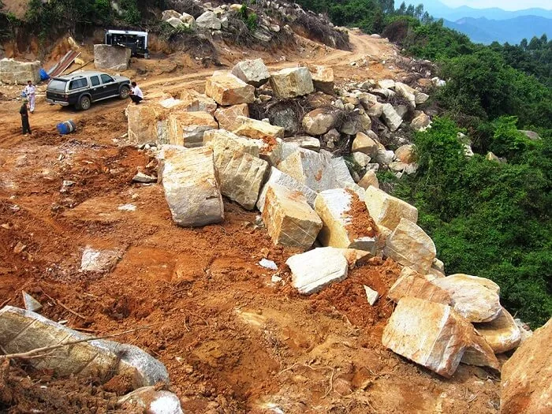
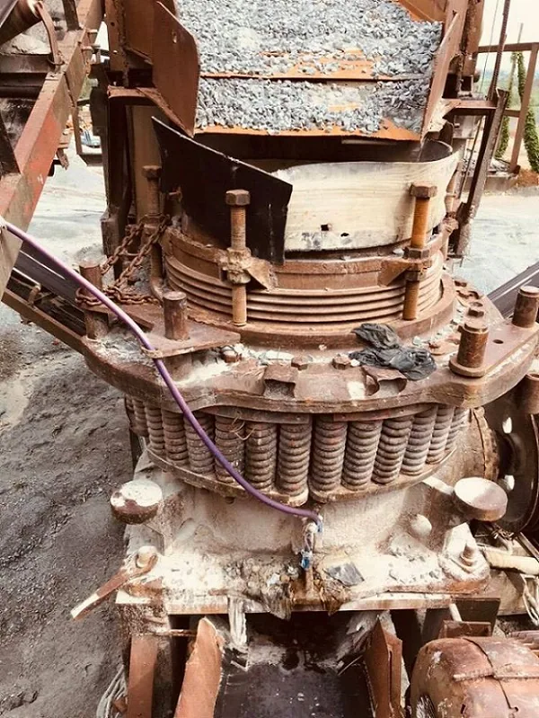
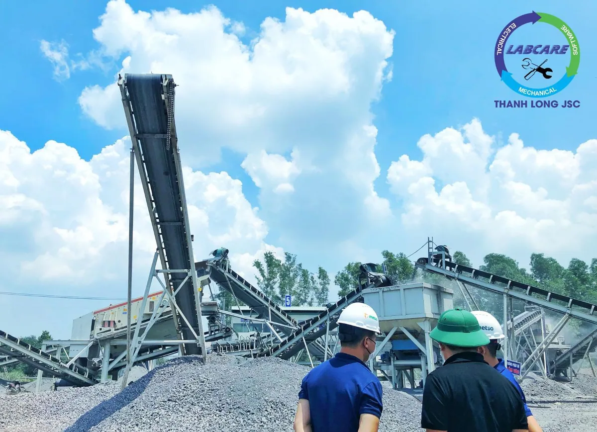
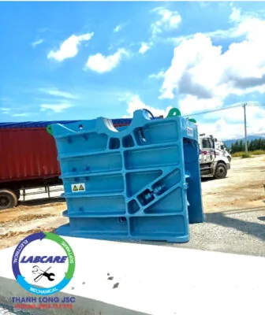
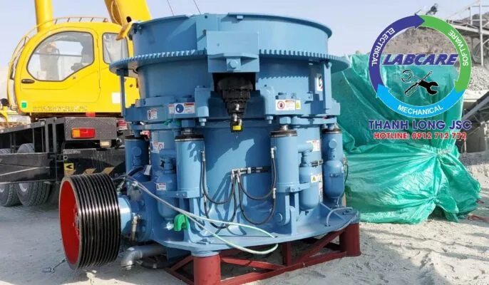
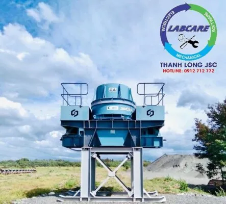
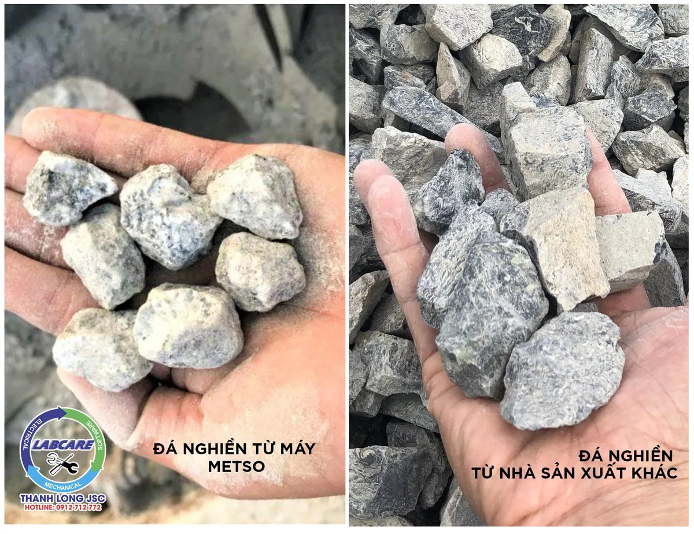
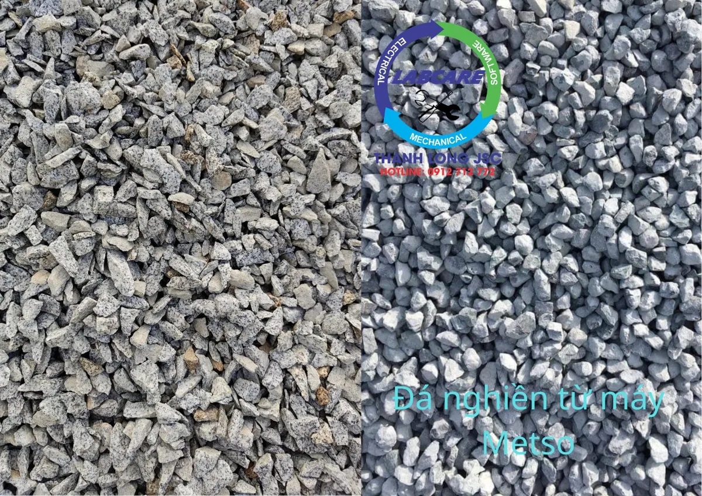

Khoáng sản ở Tây Nguyên khá phong phú và đa dạng về loại hình, kiểu nguồn gốc. Trong đó có những loại đá xây dựng có quy mô rất lớn (granite, bazan, thạch anh,…) chủ yếu tập trung ở các nơi như: Ea M’Doal, Ea Riêng; Ea H’Mlay; huyện Đắk Tô, Ngọc Hồi, Đắk Glei; thôn Kép Ram; xã Đức Mạnh, huyện Đắk Mil, tỉnh Đắk Nông; xã Chư Á, TP Pleiku, tỉnh Gia Lai; “tam giác vàng” huyện Đắk G’Long, tỉnh Đắk Nông; huyện Ia Grai, tỉnh Gia Lai. Đây là những loại khoáng sản có thế mạnh của Tây Nguyên, trong cân đối nguồn tài nguyên khoáng sản của cả nước. Vậy máy nghiền đá SRH, đem lại những gì cho nguồn khoáng sản ở Tây Nguyên?
Các mỏ đá ở KonTum như mỏ SGBY, Gia Lai có mỏ đá Đức Trung Thành. Nhà Máy Đá Granite Quốc Duy, khoáng sản Anh Khoa. Mỏ Trang Đức, mỏ Duy Nhất … Nơi phân bố đá granite lớn nhất nhì Vùng Tây Nguyên.

Cầu cao – Cung thấp
Theo Bộ GTVT, Tây Nguyên là vùng có vị trí chiến lược đặc biệt quan trọng về quốc phòng, an ninh. Là đầu mối giao thương, trung chuyển hàng hóa và dịch vụ thương mại – du lịch của các nước tiểu vùng sông Mê Kông, biển Đông. Vùng trọng điểm phát triển cây công nghiệp, nông – lâm nghiệp.
Các công trình hạ tầng giao thông trọng điểm như cao tốc Trung Lương – Mỹ Thuận, các tuyến metro. Cao tốc khu vực miền Trung – Tây Nguyên (bao gồm 220km tuyến cao tốc Phú Yên – Đắk Lắk)…. Cũng đang được đẩy nhanh tiến độ triển khai. Đây sẽ là những yếu tố chính thúc đẩy đà tăng trưởng dài hạn, của các doanh nghiệp ngành đá xây dựng.
Nhà nước cũng đầu tư nâng cấp 3 cảng hàng không theo đúng quy hoạch: Cảng hàng không Liên Khương (Lâm Đồng), Buôn Ma Thuột (Đắk Lắk). Pleiku (Gia Lai) để máy bay A320 hạ, cất cánh phục vụ tốt yêu cầu đi lại, vận tải của hành khách…
Máy nghiền đá đủ khả năng và năng lực, giúp các chủ đầu tư đạt tất cả tiêu chuẩn mà các dự án lớn nhỏ đưa ra.
Đầu tư vào máy nghiền đá, mang về lợi nhuận nhiều nhất. Khách hàng chúng tôi lúc trước họ đều dùng máy Nhật bãi, hàng thanh lý, phế liệu …. Và đã thay đổi tư duy – thay đổi cuộc đời nhờ những phát hiện “khủng khiếp” sau.
Nhược điểm khi sử dụng máy nghiền đá phế liệu

-
Hàng phế liệu, kém chất lượng
Máy nghiền đá phế liệu thanh lý không phải là thiết bị chính hãng mới 100%. Nên tiềm ẩn rất nhiều nguy cơ về hàng tự chế, hàng nhái thương hiệu, kém chất lượng. Tình huống hay gặp nhất là ngoại hình máy trông còn khá mới, nhưng bên trong lại là các phụ kiện cũ hoặc đã được thay thế bằng các linh kiện kém chất lượng. Ngoài ra, cũng có trường hợp nhà cung cấp cố tình làm giả nhãn mác của thương hiệu uy tín, để đánh lừa khách hàng, nhằm tăng giá bán thiết bị để trục lợi.
-
Độ bền thấp
Thời gian sử dụng, độ bền máy nghiền đá bị khấu hao theo từng năm, từng tháng thậm chí cả từng giờ. Với máy nghiền đá cũ thì mức độ hao mòn thiết bị đã khá cao, nên độ bền chắc chắn sẽ thấp hơn so với máy nghiền đá mới. Ngoài ra, nếu mua máy nghiền đá cũ thì bạn cũng khó đoán biết được khi nào máy sẽ hư hỏng, không thể dùng được nữa.
-
Máy nghiền đá cũ công suất yếu
Máy nghiền đá cũ là thiết bị đã qua sử dụng. Do đó, chất lượng hoạt động, công suất máy sẽ không còn được như lúc đầu. Ngoài ra, hiệu quả nghiền cũng có thể giảm sút rất đáng kể. Việc này sẽ gây ảnh hưởng rất lớn đến tiến độ và hiệu quả sản xuất của doanh nghiệp, gây mất uy tín với đối tác xây dựng.
Một trong những vấn đề khiến doanh nghiệp “rối não” khi dùng máy nghiền đá cũ, là máy rất dễ hư hỏng, trục trặc trong quá trình sản xuất. Do đó cần phải bảo trì, sửa chữa thường xuyên. Điều này khiến cho chi phí hoạt động, chi phí bảo dưỡng, bảo trì. Vật tư tiêu hao máy nghiền đá tăng lên đáng kể, thậm chí có thể nhiều hơn cả khi mua mới.
Đặc biệt, một số dòng máy nghiền đá phế liệu hàng bãi có model quá cũ, nên nhà sản xuất đã không còn cung cấp linh kiện, vật tư thay thế nữa. Dù có muốn thay mới, thì cũng rất khó tìm ra linh kiện phù hợp. Nếu chỉ sửa chữa để sử dụng tiếp, thì các hư hỏng của máy sẽ vẫn lặp đi lặp lại, vừa gây tốn kém vừa ảnh hưởng đến hoạt động sản xuất.
-
Tốn nhiều điện năng tiêu thụ hơn
Vì khả năng hoạt động giảm sút sau một thời gian sử dụng, nên đa số các model máy nghiền đá phế liệu cũ thường có mức tiêu hao năng lượng lớn hơn. Bên cạnh đó, máy đời cũ không được trang bị các công nghệ tiên tiến. Nên khả năng tiết kiệm điện năng sẽ không bằng các dòng máy mới trên thị trường.
-
Chế độ bảo hành kém hoặc không bảo hành
Máy nghiền đá chính hãng mới sẽ được đi kèm, với chế độ bảo hành và hỗ trợ từ nhà sản xuất. Ví dụ như tại Thanh Long JSC, khi mua máy nghiền đá Thanh Long. Bạn sẽ được bảo hành trong vòng 2 năm, 6 tháng bảo dưỡng định kỳ 1 lần. Tư vấn 24/24 và hỗ trợ sửa chữa trong vòng 72 giờ, các sự cố nhỏ có thể tư vấn trực tiếp qua video call. Tuy nhiên, nếu mua máy nghiền đá đã qua sử dụng. Bạn sẽ không nhận được các chính sách bảo hành, sửa chữa chính hãng của nhà sản xuất.
Máy nghiền đá là “chìa khóa trao tay” cho sự thành công của khách hàng.

Máy nghiền đá là máy giúp làm giảm kích thước của vật liệu thô sau nổ mìn. Máy giúp nguồn vật liệu từ to thành nhỏ, thành cốt liệu phù hợp cung cấp bê tông, cấp phối đường cao tốc…..
Máy nghiền đá được dùng phổ biến trong ngành xây dựng, giúp cho quá trình thi công được nhanh – dễ dàng hơn.
Với máy nghiền đá chúng tôi khuyên khách hàng, tuân thủ 3 công đoạn nghiền dưới đây, tùy thuộc vào ứng dụng đầu ra.
Máy nghiền hàm (heo hàm, đập hàm, kẹp hàm), chuyển sang máy nghiền thô. Và kết thúc là máy nghiền tinh.
Mô tả cụ thể phân thành 3 giai đoạn, để tạo ra các sản phẩm bảo đảm tỉ lệ thoi dẹt, hình thù và biên dạng tốt như:. Đá mi sàng, đá mi bụi, đá 1×2, đá 4×6 và đá cấp phối…
-
Giai đoạn 1: Sàng lọc các tạp chất và bắt đầu nghiền thô bằng máy kẹp hàm

Đá nổ mìn được sàng lọc ở kích thước dưới 800mm, được cấp cho đập hàm ở mức cài đặt 120mm và được cho ra khe xả. Cấp liệu rung được thiết kế riêng biệt của Thanh Long, cho phép tách lọc thành phần đất/đá/cát, kim loại lẫn vào, có kích thước khe xả #80mm. Khi qua sàng tách #20mm, để ra 2 thành phần 0-20mm và 22-80mm sẽ được đưa vào bãi trữ trung gian. Nhằm tăng tối đa công suất hàm nghiền, đá trên 80mm mới phải được nghiền qua máy kẹp hàm.
-
Giai đoạn 2: Máy nghiền côn (côn phá) và chuẩn bị đá cho giai đoạn nghiền tinh

Đá được lấy từ khe xả của máy kẹp hàm sẽ được cấp liệu rung và băng tải đưa vào cho côn bán thuỷ lực hiệu suất cao, ở mức cài đặt cửa xả 35mm. Đá đầu ra sẽ được đưa qua sàng rung 2000×6000 để tách loại 2 thành phần, với 2 trường hợp như sau:
- Trường hợp 1: Cấp phối đá base cho dự án Cao tốc. Phần đá trên sàng ở mắc lưới #40mm sẽ được hồi về nghiền lại. Phần đá mắc ở trên lưới sàng sẽ cho ra bãi dự trữ thành phẩm để lấy lượng phối Base hay Sub base tùy theo yêu cầu của chủ đầu tư.
- Trường hợp 2: Không lấy đá base cho cao tốc, chỉ sản xuất phục vụ cho thị trường vật liệu xây dựng. Sản phẩm đá trên 40mm, sẽ được cho lên phễu chờ trước máy nghiền SV để chuẩn bị nghiền giai đoạn 3 – nghiền tinh.
Phần này chúng ta cũng có thể linh hoạt để lấy đá 40-60mm. Phần đá dưới sàn #5mm, #10mm và #20mm sẽ được cho ra cần sản phẩm. Toàn bộ quá trình cấp liệu cho côn, tạo ra sản phẩm đẹp và không làm hại đến phần má nghiền côn khi hoạt động.
-
Giai đoạn 3: Nghiền tinh bằng SV của SRH

Ở giai đoạn này đá từ phễu chờ 20m3 sẽ được cấp vào máy nghiền SV. Thông qua cấp liệu rung để đảm bảo phễu trên miệng máy luôn đầy, để cho đá ra có hình dạng hình khối đẹp nhất. Máy nghiền cát SV cửa xả đầu ra ở mức 24mm sẽ được quay với tốc độ 2100 vòng/phút. Sẽ giúp sản lượng đầu ra nhiều và chất lượng đẹp hơn rất nhiều so với dùng côn tinh.
Phần cát, đá 5-10mm, 10-25mm sẽ được 2 sàng rung 2600x6100mm phân loại. Có thể sẽ được hồi về phễu chứa để tiếp tục quá trình nghiền. Ngoài ra còn có thể cho ra sản phẩm đá 20-40mm. Đá 1×2 sau khi qua máy SV đủ chất lượng và phù hợp cho trạm bê tông tươi, cấp phối dự án cao tốc, Asphalt, bê tông ly tâm…
Sau khi trải qua 3 công đoạn nghiền, thành phẩm sẽ rất đẹp và tròn. Điển hình là các trạm nghiền đá lắp đặt tại các khu vực Tây Nguyên và Đông Nam Bộ. Đá 1×2 bán ra luôn đẹp và đạt tiêu chuẩn hơn so với các trạm nghiền cũ, tái chế lại. Nhằm thu hút lượng khách hàng ổn định, uy tín và chất lượng. VLXD đạt tiêu chuẩn, nguồn hàng luôn đầy đủ các dự án lớn nhỏ.
Dây chuyền máy nghiền đá “Chìa khóa trao tay”.

Với hơn 150 năm đi đầu trong lĩnh vực công nghệ nghiền sàng đá, trạm nghiền của Thanh Long được các chủ đầu tư lựa chọn, bởi:
- Tiết kiệm điện từ 4000đ/ 1 khối đá đầu ra.
- Vật tư tiêu hao bền hơn 2 lần so với các nhà sản xuất khác.
- Hoạt động bền bỉ không dừng máy, chi phí sản xuất thấp
- Hệ thống báo hiệu cảnh báo áp suất, nhiệt độ, khe xả trên màn hiển thị.
- Hệ thống chống kẹt đá, phát hiện kim loại, chống quá tải được tích hợp.

Thanh Long JSC đại diện Phần Lan tại Việt Nam chuyên cung cấp:
- Dây chuyền nghiền cát/đá cố định: Máy kẹp hàm, máy nghiền côn, sàng rung phân loại, máy nghiền cát nhân tạo VSI Barmac, …
- Dây chuyền nghiền cát/đá di động: máy kẹp hàm di động, máy nghiền côn di động, sàng rung phân loại di động, máy nghiền cát nhân tạo VSI Barmac di động,..
- Công nghệ rửa/tách: Máy rửa cát theo module, sàng rung tách nước, máy tuyển rửa cát, máy tách cát mịn, máy thu hồi cát mịn…
- Vật tư, thiết bị phụ tùng: Dao nghiền, lưới sàng, má kẹp hàm, nón côn, …

Kênh video Youtube:
- Thế giới máy nghiền đá : https://bom.to/Htr0s8Qj9ThdOi
- Thanh Long JSC https://bom.to/6kyWNaQG07y6Oy
Page Facebook: Công Nghệ Máy Nghiền Đá
Website: https://thegioimaynghienda.com https://labcare.com.vn/
Zalo, hotline, báo giá, whatsapp: 0912 712 772